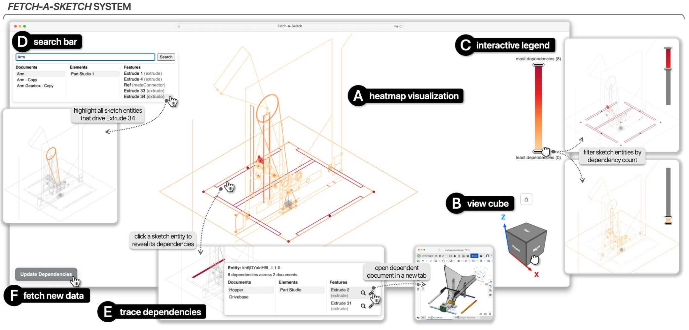
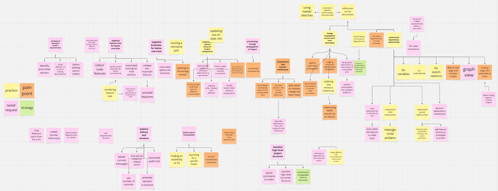
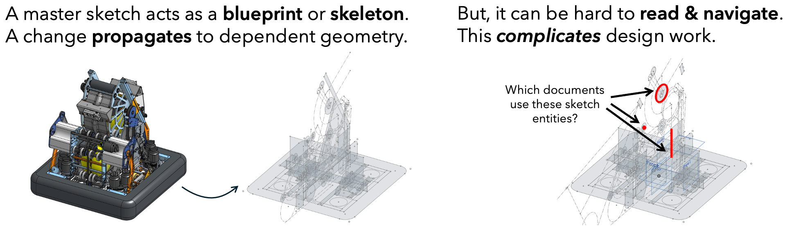
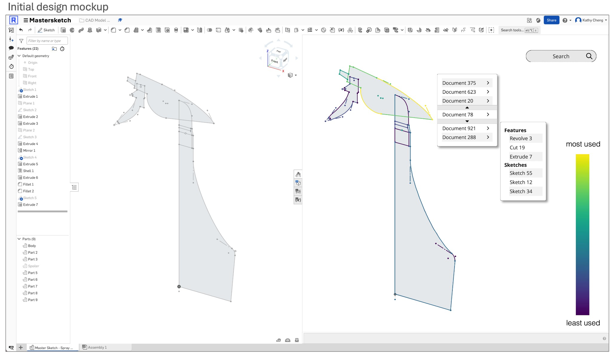
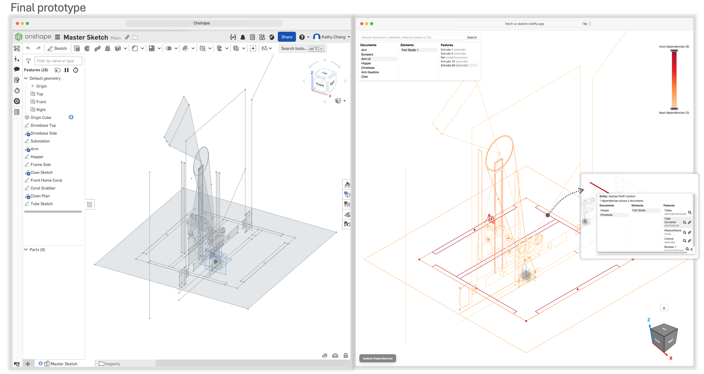

Fetch-A-Sketch Design and Evaluation
A research-driven dependency visualization tool to reduce risk in complex CAD projects.

Overview
Parametric CAD models are built on layers of interdependent features. As projects scale, these dependencies accumulate quietly, forming complex networks that are difficult to trace and even harder to reason about.
Designers frequently struggle to answer a critical question before making changes: “What will this break?”
While existing CAD tools support reference tracing, they do not support higher-level dependency sensemaking. Designers often rely on naming conventions, positional heuristics, or even destructive trial-and-error to understand downstream impact.
This project explored how to surface hidden dependency structures in a way that aligns with how designers naturally reason about geometry — reducing change risk without disrupting existing workflows.
Goal
The objective was to design and validate an approach that would:
- Reduce change risk in complex CAD models
- Improve visibility of high-impact sketch entities
- Support faster, non-destructive dependency exploration
- Complement existing CAD tools rather than replace them
The goal was not simply better tracing — but better impact prediction and decision confidence.
Process
Phase 1: Generative Research
To understand systemic dependency challenges, I conducted:
- Qualitative content analysis of 100 CAD forum threads
- In-depth interviews with 10 professional CAD practitioners
To analyze this data, I used Miro for affinity mapping and axial synthesis.

Across both datasets, recurring challenges clustered around:
- Difficulty tracing dependency chains
- Lack of project-level visibility
- Risky or time-consuming change planning
One particular problem centered around the difficulty navigating and managing dependencies in CAD master sketches. This shaped the direction of the prototype.

Phase 2: Prototyping Fetch-A-Sketch
The generative research revealed two gaps: designers struggled to access dependency information efficiently and to interpret its impact meaningfully.
Rather than redesigning the CAD system, I defined the opportunity as a separate tool that could run alongside existing workflows and complement native functionality.
Design principles
- Surface downstream dependencies directly on sketch geometry
- Use glanceable visual signals instead of dense diagrams
- Support selective exploration without overwhelming users
- Preserve existing CAD workflows
To represent impact, I used a heatmap overlay directly on sketch geometry and operationalized risk as dependency density (absolute downstream reference count).
To improve traceability, I introduced targeted interactions that allow designers to filter entities, search for driving features, and inspect downstream dependencies non-destructively.
Iteration and Build
I started with a low-fidelity UI mockup to test how heatmap overlays, filtering, and search could fit naturally into a CAD sketch workflow.

After iterating on the interaction model, we implemented a working prototype that could run alongside the CAD environment for real dependency exploration.

The resulting prototype, Fetch-A-Sketch, overlays a heatmap onto the master sketch, enabling designers to:
- Identify high- and low-impact regions at a glance
- Filter entities by dependency count
- Search for features or documents and highlight driving entities
- Inspect downstream dependencies non-destructively
The system runs alongside the CAD environment, augmenting — not replacing — native tools.
Phase 3: Evaluation
To assess behavioral impact, I conducted a within-subjects usability study with four experienced CAD users comparing:
- CAD alone
- CAD + Fetch-A-Sketch
Participants completed dependency-identification and impact-prediction tasks using Onshape in a realistic multi-document robot model.
I collected and analyzed data through:
- Think-aloud sessions, coding users’ verbalized reasoning during task completion
- Behavioral observation, analyzing navigation and interaction strategies
- Post-task interviews, synthesizing feedback on usability, perceived value, and areas for refinement
The objective was not only to assess usability, but to understand whether the tool changed how designers reasoned about dependency risk.
Key Findings
1. Designers adopted the heatmap as a primary decision aid
Participants immediately used dependency density and filtering controls to identify high-impact sketch regions, replacing position- or naming-based heuristics.
2. Fetch-A-Sketch reduced destructive exploration
Instead of deleting features to observe failures, participants inspected downstream dependencies directly, supporting safer and more deliberate change planning.
3. Geometry-aligned visualization lowered cognitive overhead
Mapping dependency density onto sketch geometry reduced the need to translate between reference lists and spatial context.
4. Dependency count surfaced risk — but was not sufficient
Participants emphasized the need for richer signals, such as cross-subsystem coupling and semantic grouping, highlighting clear directions for future evolution.
Overall, the prototype supported more structured and proactive impact assessment during model modification.
Impact
This project demonstrated a viable approach to embedding dependency intelligence directly into CAD workflows. Implications include:
- Reduced debugging time and fewer unintended downstream breaks
- Greater confidence when modifying shared master sketches
- More efficient design reviews and onboarding to unfamiliar models
- A foundation for richer dependency-risk modelling in future CAD systems
Beyond CAD, the work contributes to a broader challenge shared across complex software systems: making hidden document structures legible to practitioners.
Reflection
This project reinforced the importance of designing for invisible complexity. Rather than introducing heavier abstractions, I focused on surfacing lightweight, interpretable signals aligned with designers’ existing mental models.
It also highlighted the limits of single metrics, pointing toward richer, context-aware risk indicators. The broader lesson: in complex systems, clarity often comes from revealing hidden information (in a digestible manner) — not from adding more tooling, but from reinventing how information is presented.